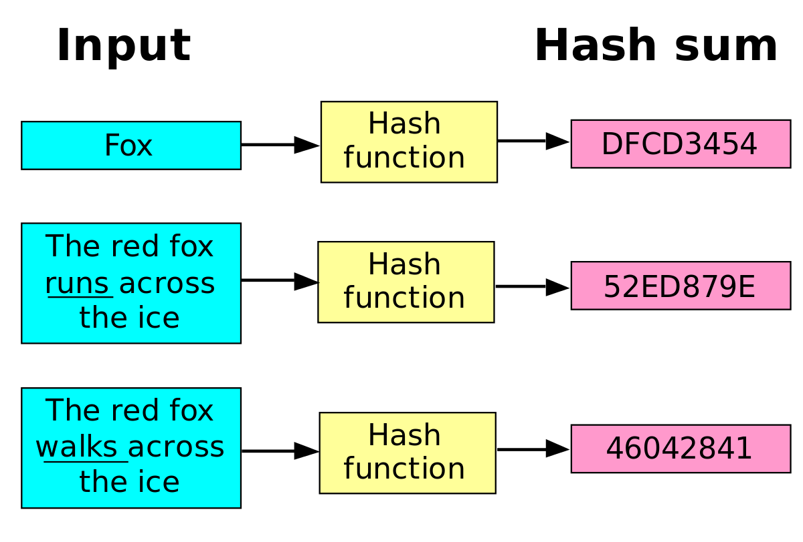
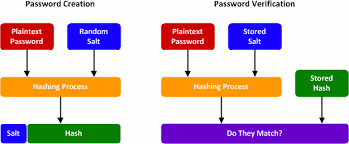
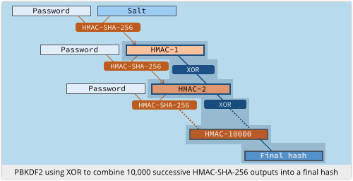
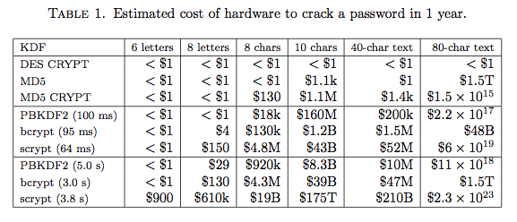
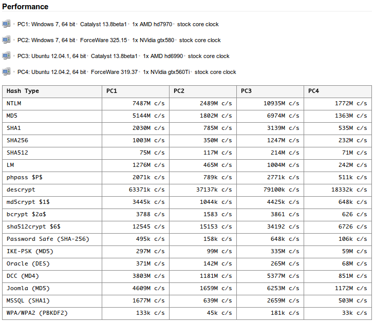

介紹如何使用 PBKDF2 更有效且安全的加密密碼
密碼加密是常見的開發需求，一般最簡單的做法可能會有直接將密碼明文(Plain Text)直接透過雜湊演算法（ MD5 或是 SHA-1 ）進行加密產生密碼密文(Ciphertext)，
最後將密文儲存至DB 之後輸入每次都接受明文後透過相同流程產生密文後比對兩者是否相同．

但上面的做法雖然可以在資料層不暴露密碼的明文，但對於密碼的保護絲毫沒有任何效果．這兩者並不安全且所生成的Hash值也是相當的薄弱。它主要的優點在於生成速度快且易於實現。但是，這也意味著它是容易被暴力攻擊(Exhaustive attack)和字典攻擊(Dictionary Attack)。例如使用明文和Hash生成的彩虹表(Rainbow table)可以快速地搜索已知Hash對應的原使明文。
此外，MD5並沒有避免Hash碰撞：這意味不同的密碼會導致生成相同的Hash值。
如果真的要採用以上方法的話建議針對密碼加鹽(Salt)，每次密碼生成時增加一段亂數產生的資料並合併至原始明文內進行雜湊:

以上的做法可以有效地產生避免上述問題，但無法解決暴力攻擊的直接破解，尤其有心人士可能都是拿GPU來做更高速的運算，此時你就需要專門為了網路應用程式開發的密碼而生的 PBKDF2 來生成密碼．
What is PBKDF2
PBKDF2(Password-Based Key Derivation Function) 是一個用來產生密鑰的雜湊函數，常用於生成具備加密的密碼。
它的基本原理是通過一個偽隨機函數（例如HMAC函數），把明文和一個鹽值作為輸入參數，然後重複進行運算，並最終產生密鑰
PBKDF2 的定義如下:
DK = PBKDF2(PRF, Password, Salt, c, dkLen)
DK(derived key)
產生的密碼金耀
PRF(pseudo-random function)
表示是一個隨機函數，例如HASH_HMAC函數，它會輸出長度為hLen的的結果。
Password
輸入的密碼明文
Salt
隨機產生的一次性亂數(長度須高於一定長度)
c
進行重複計算的回合數（越多越複雜）
dkLen
欲產生的 DK 密文金鑰長度
如果重複計算的回合數足夠大，破解的成本就會變得很高。而Salt的添加也會增加攻擊的難度。上述的流程則如下示意：

PBKDF2 與其他知名的密碼雜湊比較(Bcrept, SHA-256)的破解成本比較就可以知道差異:

另外因為GPU比CPU做運算會快上更多，而PBKDF2 有針對 GPU 的攻擊做防範，這則是傳統加密雜湊運算所沒有的，整體 GPU 運算比較如下(oclHashcat-plus)：

現金的無線網路 WPA/WPA2 的規格預設採用 PBKDF2，所以各語言的普及率也高，如果需要找個密碼標準來用的話，PBKDF2 是相當不錯的選擇．
Implement PBKDF2 with C#
開發上只要引入 KeyDerivation 這個 Class
Namespace:
Microsoft.AspNetCore.Cryptography.KeyDerivation
Assembly:
Microsoft.AspNetCore.Cryptography.KeyDerivation.dll
因為是 ASP.NET Core 預設的已包含的套件，開發 ASP.NET Core 的朋友可以直接使用，而開發 .NET Core 的朋友則需要透過引入指令以下加入專案參考：
Install-Package Microsoft.AspNetCore.Cryptography.KeyDerivation
這邊需要呼叫的是 KeyDerivation.Pbkdf2(String, Byte[], KeyDerivationPrf, Int32, Int32) Method：
password
原始傳入的密碼明文
salt，
藉由Encoding.UTF8.GetBytes轉成byt陣列資料，傳進Pbkdf2參數，當鹽使用。
prf，
PRF是一個偽隨機函數
iterationCount
雜湊執行次數
numBytesRequested，
產出的 DK 長度
程式碼如下：
1 |
|